Implementacion#
Librerias#
import pandas as pd
import seaborn as sns
import matplotlib.pyplot as plt
import numpy as np
from sklearn.model_selection import train_test_split, GridSearchCV
from sklearn.metrics import accuracy_score,confusion_matrix, classification_report,precision_score,recall_score,f1_score,roc_auc_score
from sklearn.linear_model import LogisticRegression
from sklearn.compose import ColumnTransformer
from sklearn.preprocessing import StandardScaler, OneHotEncoder
from sklearn.neighbors import KNeighborsClassifier
from imblearn.pipeline import Pipeline
from imblearn.over_sampling import SMOTENC
from statsmodels.stats.outliers_influence import variance_inflation_factor
from sklearn.metrics import roc_curve, auc
from imblearn.over_sampling import SMOTE
from sklearn.preprocessing import label_binarize
import warnings
warnings.filterwarnings("ignore", category=FutureWarning, module="sklearn.linear_model._logistic")
warnings.filterwarnings("ignore", category=FutureWarning, module="sklearn.base")
Cargado de datos#
df_url='https://docs.google.com/spreadsheets/d/1NJiaIRABEh1mJrqzP6bAYBkhBruBwUUzplHdXViv9-g/export?format=csv'
df=pd.read_csv(df_url)
Funciones#
def Summary(data, sheet):
print(f"Hoja: {sheet}")
# Crear la tabla de resumen
resumen = {
"Cantidad de filas": data.shape[0],
"Cantidad de columnas": data.shape[1],
"Datos faltantes": data.isnull().sum().sum(),
"Filas duplicadas": data.duplicated().sum()
}
# Convertir el resumen en un DataFrame
ResumenHoja = pd.DataFrame(resumen, index=["Resumen"])
print("\nResumen:")
display(ResumenHoja)
print("\nEncabezado:")
display(data.head())
def plot_multiclass_roc(model, X_test, y_test, classes):
# Binarizar etiquetas (One-vs-Rest)
y_bin = label_binarize(y_test, classes=classes)
n_classes = y_bin.shape[1]
# Obtener probabilidades
y_score = model.predict_proba(X_test)
# Calcular curva ROC y AUC por clase
fpr, tpr, roc_auc = {}, {}, {}
for i in range(n_classes):
fpr[i], tpr[i], _ = roc_curve(y_bin[:, i], y_score[:, i])
roc_auc[i] = auc(fpr[i], tpr[i])
# Promedio macro
all_fpr = np.unique(np.concatenate([fpr[i] for i in range(n_classes)]))
mean_tpr = np.zeros_like(all_fpr)
for i in range(n_classes):
mean_tpr += np.interp(all_fpr, fpr[i], tpr[i])
mean_tpr /= n_classes
roc_auc["macro"] = auc(all_fpr, mean_tpr)
# Graficar
plt.figure(figsize=(6,6))
for i in range(n_classes):
plt.plot(fpr[i], tpr[i], lw=2,
label=f"Clase {classes[i]} (AUC = {roc_auc[i]:.2f})")
plt.plot(all_fpr, mean_tpr, color="black", linestyle="--",
label=f"Macro promedio (AUC = {roc_auc['macro']:.2f})")
plt.plot([0,1],[0,1],"k--")
plt.xlabel("False Positive Rate")
plt.ylabel("True Positive Rate")
plt.title("Curvas ROC Multiclase")
plt.legend(loc="lower right")
plt.show()
return roc_auc
Analisis exploratorio de datos#
Summary(df,'Datos pacientes')
Hoja: Datos pacientes
Resumen:
| Cantidad de filas | Cantidad de columnas | Datos faltantes | Filas duplicadas | |
|---|---|---|---|---|
| Resumen | 212691 | 17 | 0 | 0 |
Encabezado:
| Patient_ID | Age | Gender | Country | Ethnicity | Family_History | Radiation_Exposure | Iodine_Deficiency | Smoking | Obesity | Diabetes | TSH_Level | T3_Level | T4_Level | Nodule_Size | Thyroid_Cancer_Risk | Diagnosis | |
|---|---|---|---|---|---|---|---|---|---|---|---|---|---|---|---|---|---|
| 0 | 1 | 66 | Male | Russia | Caucasian | No | Yes | No | No | No | No | 9.37 | 1.67 | 6.16 | 1.08 | Low | Benign |
| 1 | 2 | 29 | Male | Germany | Hispanic | No | Yes | No | No | No | No | 1.83 | 1.73 | 10.54 | 4.05 | Low | Benign |
| 2 | 3 | 86 | Male | Nigeria | Caucasian | No | No | No | No | No | No | 6.26 | 2.59 | 10.57 | 4.61 | Low | Benign |
| 3 | 4 | 75 | Female | India | Asian | No | No | No | No | No | No | 4.10 | 2.62 | 11.04 | 2.46 | Medium | Benign |
| 4 | 5 | 35 | Female | Germany | African | Yes | Yes | No | No | No | No | 9.10 | 2.11 | 10.71 | 2.11 | High | Benign |
df.info()
<class 'pandas.core.frame.DataFrame'>
RangeIndex: 212691 entries, 0 to 212690
Data columns (total 17 columns):
# Column Non-Null Count Dtype
--- ------ -------------- -----
0 Patient_ID 212691 non-null int64
1 Age 212691 non-null int64
2 Gender 212691 non-null object
3 Country 212691 non-null object
4 Ethnicity 212691 non-null object
5 Family_History 212691 non-null object
6 Radiation_Exposure 212691 non-null object
7 Iodine_Deficiency 212691 non-null object
8 Smoking 212691 non-null object
9 Obesity 212691 non-null object
10 Diabetes 212691 non-null object
11 TSH_Level 212691 non-null float64
12 T3_Level 212691 non-null float64
13 T4_Level 212691 non-null float64
14 Nodule_Size 212691 non-null float64
15 Thyroid_Cancer_Risk 212691 non-null object
16 Diagnosis 212691 non-null object
dtypes: float64(4), int64(2), object(11)
memory usage: 27.6+ MB
df.describe()
| Patient_ID | Age | TSH_Level | T3_Level | T4_Level | Nodule_Size | |
|---|---|---|---|---|---|---|
| count | 212691.00000 | 212691.000000 | 212691.000000 | 212691.000000 | 212691.000000 | 212691.000000 |
| mean | 106346.00000 | 51.918497 | 5.045102 | 2.001727 | 8.246204 | 2.503403 |
| std | 61398.74739 | 21.632815 | 2.860264 | 0.866248 | 2.164188 | 1.444631 |
| min | 1.00000 | 15.000000 | 0.100000 | 0.500000 | 4.500000 | 0.000000 |
| 25% | 53173.50000 | 33.000000 | 2.570000 | 1.250000 | 6.370000 | 1.250000 |
| 50% | 106346.00000 | 52.000000 | 5.040000 | 2.000000 | 8.240000 | 2.510000 |
| 75% | 159518.50000 | 71.000000 | 7.520000 | 2.750000 | 10.120000 | 3.760000 |
| max | 212691.00000 | 89.000000 | 10.000000 | 3.500000 | 12.000000 | 5.000000 |
df.Thyroid_Cancer_Risk.value_counts()
Thyroid_Cancer_Risk
Low 108388
Medium 72400
High 31903
Name: count, dtype: int64
sns.set_style("whitegrid")
plt.title('Conteo de Riesgo de cancer')
sns.countplot(x=df.Thyroid_Cancer_Risk)
plt.xlabel('Thyroid Cancer Risk')
plt.ylabel('Frecuencia')
plt.show()
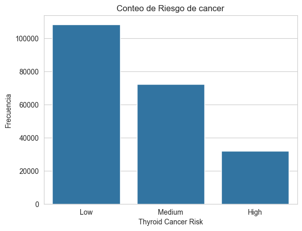
podemos observar que el dataset esta desbalanceado, tomaremos en cuenta esto mas adelante
realizaremos graficas de cada variable del dataset
numericas = ['Age', 'TSH_Level', 'T3_Level', 'T4_Level', 'Nodule_Size']
df[numericas].hist(bins=30, figsize=(12, 8))
plt.tight_layout()
plt.suptitle('Distribuciones de variables numéricas', y=1.02)
plt.show()
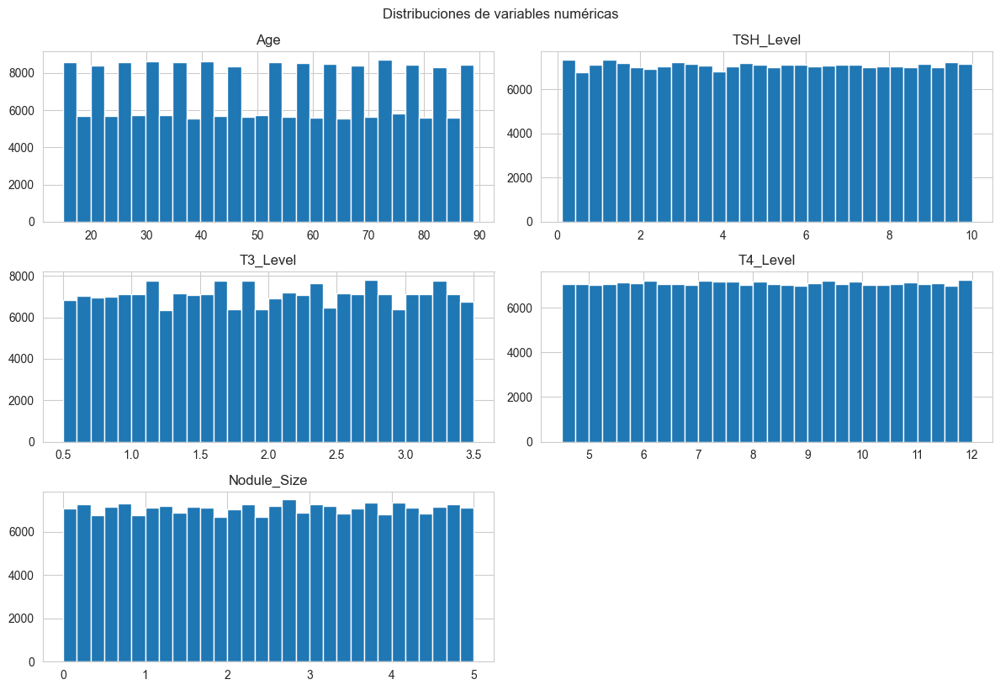
se realiza lo mismo para las variables categoricas y tambien se realiza el conteo de cada categoria
categoricas = ['Gender', 'Country', 'Ethnicity', 'Family_History', 'Radiation_Exposure',
'Iodine_Deficiency', 'Smoking', 'Obesity', 'Diabetes', 'Diagnosis']
for col in categoricas:
print(df[col].value_counts())
sns.countplot(data=df, x=col, order=df[col].value_counts().index)
plt.title(f'Distribución de {col}')
plt.xticks(rotation=45)
plt.show()
Gender
Female 127527
Male 85164
Name: count, dtype: int64
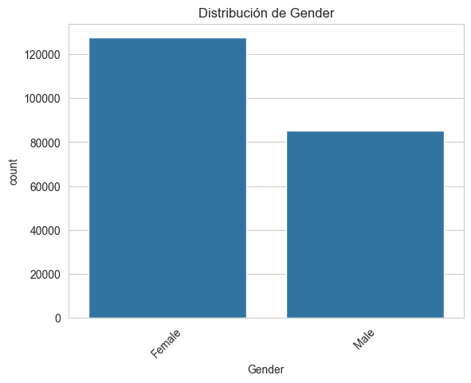
Country
India 42496
China 31978
Nigeria 31918
Brazil 21413
Russia 21297
Japan 16867
South Korea 14965
UK 10642
USA 10558
Germany 10557
Name: count, dtype: int64
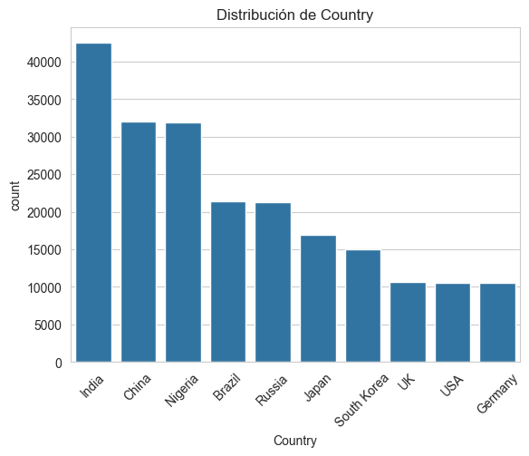
Ethnicity
Caucasian 63669
Asian 53261
African 42414
Hispanic 32012
Middle Eastern 21335
Name: count, dtype: int64
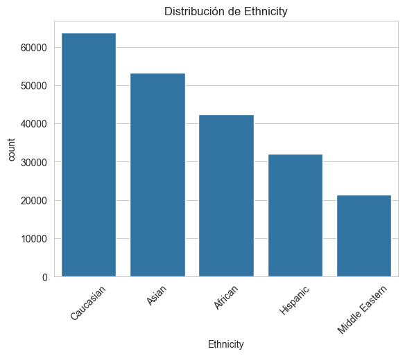
Family_History
No 148866
Yes 63825
Name: count, dtype: int64
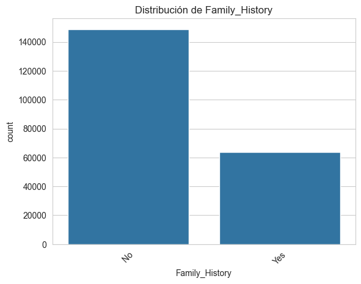
Radiation_Exposure
No 180831
Yes 31860
Name: count, dtype: int64
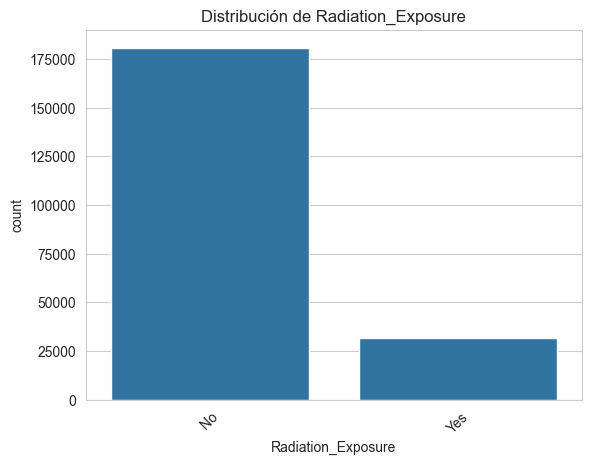
Iodine_Deficiency
No 159673
Yes 53018
Name: count, dtype: int64
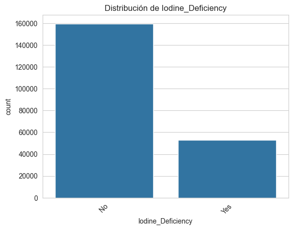
Smoking
No 170260
Yes 42431
Name: count, dtype: int64
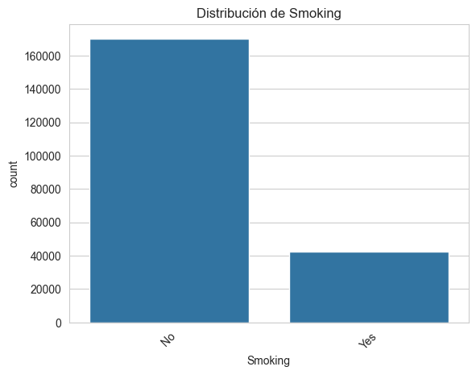
Obesity
No 148805
Yes 63886
Name: count, dtype: int64
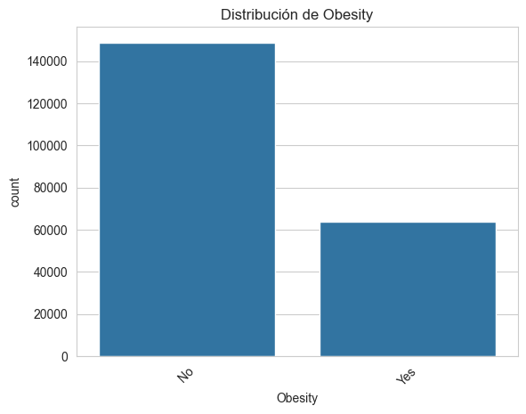
Diabetes
No 170098
Yes 42593
Name: count, dtype: int64
Diagnosis
Benign 163196
Malignant 49495
Name: count, dtype: int64
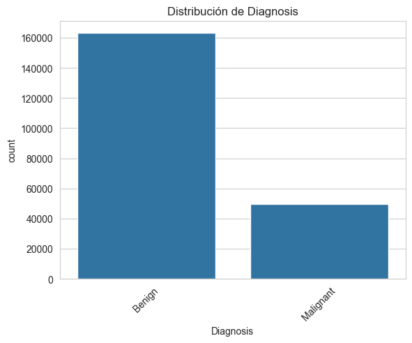
for col in numericas:
sns.boxplot(data=df, x="Thyroid_Cancer_Risk", y=col, order=['Low', 'Medium', 'High'])
plt.title(f'{col} vs {"Thyroid_Cancer_Risk"}')
plt.show()
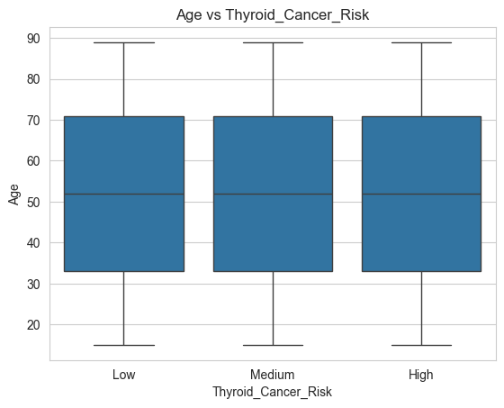
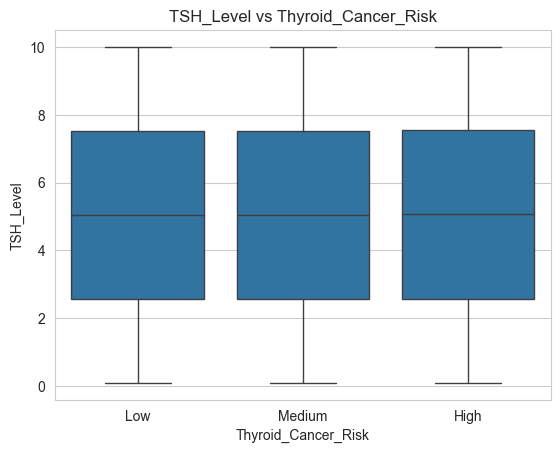
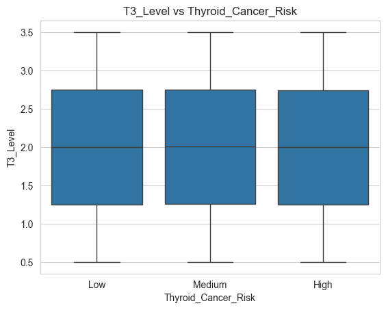
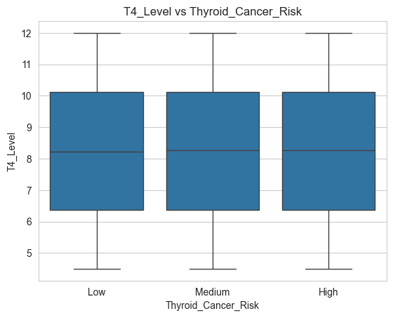
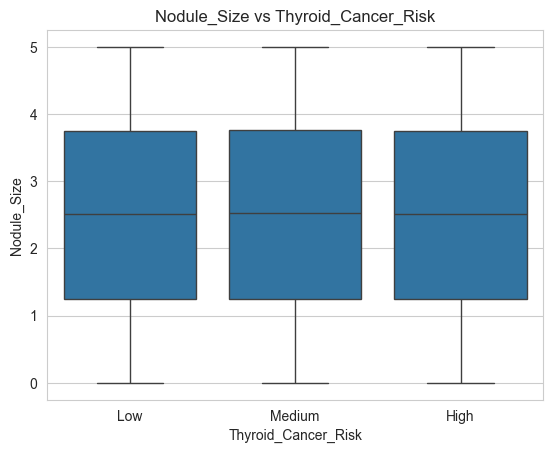
Se realizan comparaciones entre la variable objetivo y las categoricas y se examina el numero de personas que pertenecen a cada una de las categorias con respecto a las otras variables
for col in categoricas:
tabla = pd.crosstab(df[col], df['Thyroid_Cancer_Risk'])
tabla.plot(kind='bar', stacked=True)
plt.title(f'{col} vs Thyroid_Cancer_Risk')
plt.xticks(rotation=45)
plt.show()
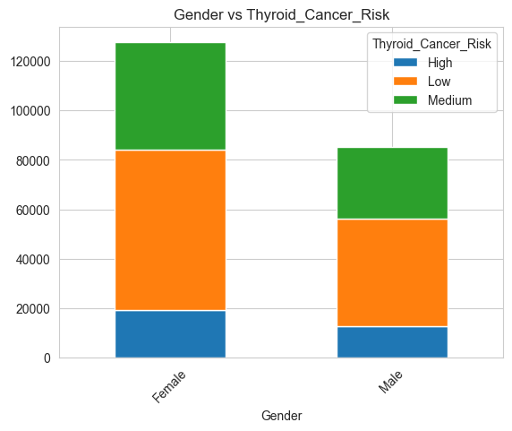
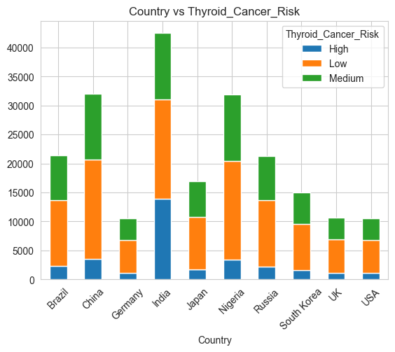
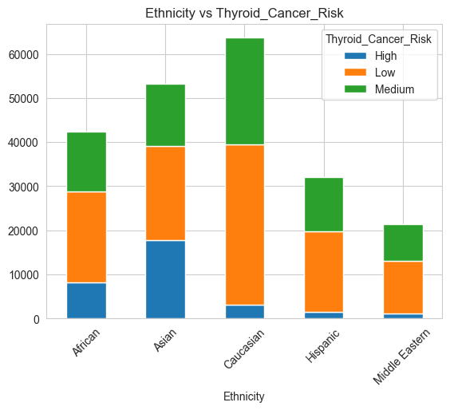
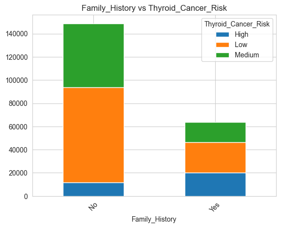
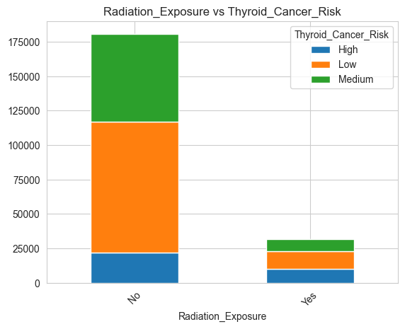
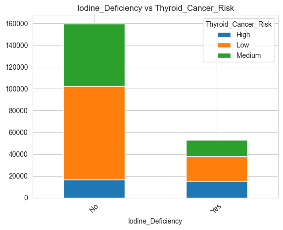
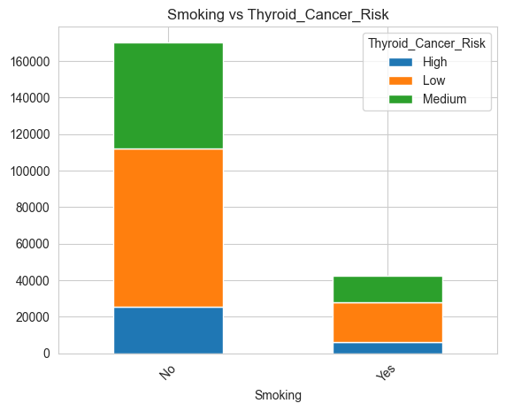
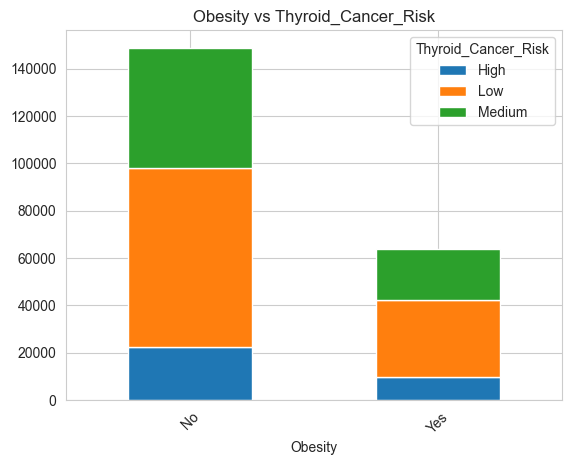
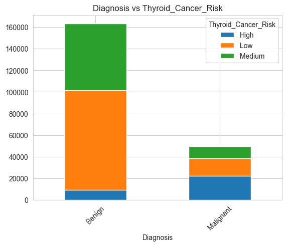
corr=df[numericas].corr()
plt.figure(figsize=(12, 8))
sns.heatmap(corr, annot=True, cmap='coolwarm', fmt=".2f")
plt.title('Matriz de Correlación')
plt.show()
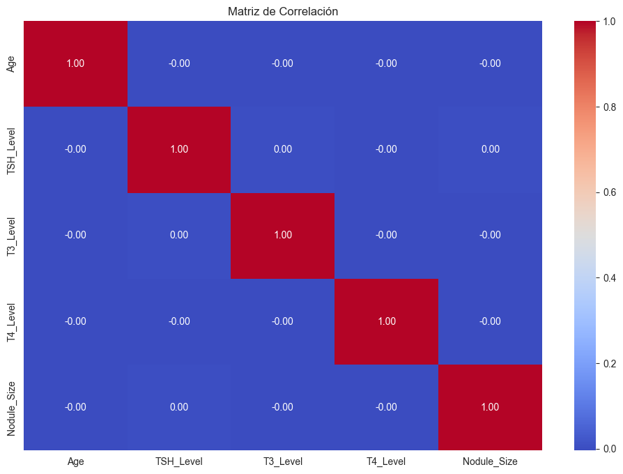
Split de los datos#
X=df.drop(columns=['Thyroid_Cancer_Risk'])
Y=df['Thyroid_Cancer_Risk']
X_train, X_test, y_train, y_test = train_test_split(X, Y, test_size=0.2, random_state=0, stratify=Y)
Preprocesamiento de datos#
#categorical_idx = [X.columns.get_loc(col) for col in categoricas]
#smote_nc = SMOTENC(categorical_features=categorical_idx, random_state=0)
#X_train_res, y_train_res = smote_nc.fit_resample(X_train, y_train)
Se realiza la transformacion de categoricas
encoder = OneHotEncoder(drop="first", handle_unknown="ignore", sparse_output=False)
X_train_cat = encoder.fit_transform(X_train[categoricas])
X_test_cat = encoder.transform(X_test[categoricas])
X_train_cat = pd.DataFrame(X_train_cat, columns=encoder.get_feature_names_out(categoricas))
X_test_cat = pd.DataFrame(X_test_cat, columns=encoder.get_feature_names_out(categoricas))
Se realiza el escalado de numericas
scaler = StandardScaler()
X_train_num = scaler.fit_transform(X_train[numericas])
X_test_num = scaler.transform(X_test[numericas])
X_train_num = pd.DataFrame(X_train_num, columns=numericas)
X_test_num = pd.DataFrame(X_test_num, columns=numericas)
X_train_final = pd.concat([X_train_num.reset_index(drop=True), X_train_cat.reset_index(drop=True)], axis=1)
X_test_final = pd.concat([X_test_num.reset_index(drop=True), X_test_cat.reset_index(drop=True)], axis=1)
mat_corr=X_train_final.corr()
plt.figure(figsize=(12, 8))
sns.heatmap(mat_corr, annot=True, cmap='coolwarm', fmt=".2f")
plt.title('Matriz de Correlación')
plt.show()
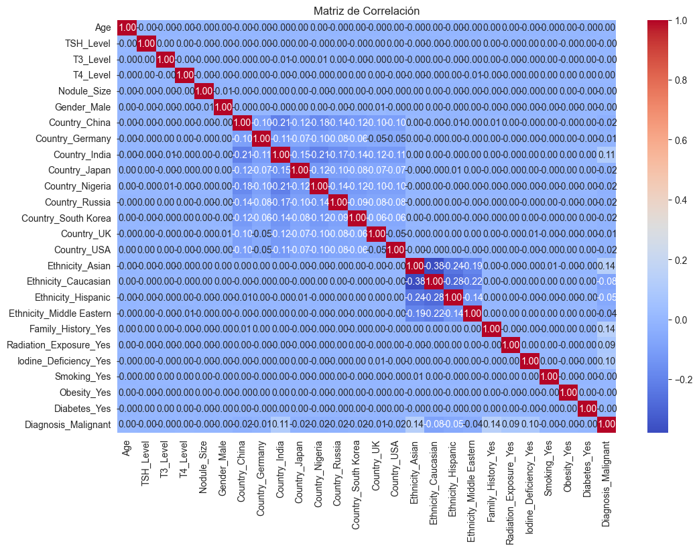
vif_data = pd.DataFrame()
vif_data["feature"] = X_train_final.columns
vif_data["VIF"] = [variance_inflation_factor(X_train_final.values, i)
for i in range(X_train_final.shape[1])]
print(vif_data.sort_values("VIF", ascending=False))
feature VIF
16 Ethnicity_Caucasian 2.049344
15 Ethnicity_Asian 1.900163
8 Country_India 1.845439
5 Gender_Male 1.600013
6 Country_China 1.599202
10 Country_Nigeria 1.596607
17 Ethnicity_Hispanic 1.529831
19 Family_History_Yes 1.429798
11 Country_Russia 1.397129
25 Diagnosis_Malignant 1.395989
23 Obesity_Yes 1.391919
18 Ethnicity_Middle Eastern 1.348411
21 Iodine_Deficiency_Yes 1.322381
9 Country_Japan 1.315885
12 Country_South Korea 1.280807
24 Diabetes_Yes 1.231910
22 Smoking_Yes 1.229027
13 Country_UK 1.202751
14 Country_USA 1.197535
7 Country_Germany 1.195027
20 Radiation_Exposure_Yes 1.174618
4 Nodule_Size 1.000150
3 T4_Level 1.000147
2 T3_Level 1.000135
0 Age 1.000132
1 TSH_Level 1.000079
smote=SMOTE(random_state=0)
X_train_final_bal,y_train_bal=smote.fit_resample(X_train_final,y_train)
Modelos#
Modelo Logistic#
Modelo Base#
classes = np.unique(y_train)
log=LogisticRegression(max_iter=1000,random_state=0,multi_class="ovr",class_weight='balanced')
log.fit(X_train_final,y_train)
LogisticRegression(class_weight='balanced', max_iter=1000, multi_class='ovr',
random_state=0)In a Jupyter environment, please rerun this cell to show the HTML representation or trust the notebook. On GitHub, the HTML representation is unable to render, please try loading this page with nbviewer.org.
LogisticRegression(class_weight='balanced', max_iter=1000, multi_class='ovr',
random_state=0)y_pred_log=log.predict(X_test_final)
accuracy_score(y_test,y_pred_log)
0.5637415077928489
precision_score(y_test, y_pred_log, average="macro")
0.5241481685624211
recall_score(y_test, y_pred_log, average="macro")
0.6073104618721518
f1_score(y_test, y_pred_log, average="macro")
0.5340702531873526
conf_matrix_log = confusion_matrix(y_test, y_pred_log).astype(int)
plt.figure(figsize=(8, 6))
sns.heatmap(conf_matrix_log, annot=True, fmt="d", cmap="gray_r",
xticklabels=['Low risk', 'Medium risk', 'High risk'],
yticklabels=['Low risk', 'Medium risk', 'High risk'])
plt.xlabel("Etiqueta Predicha")
plt.ylabel("Etiqueta Real")
plt.title("Matriz de Confusión")
plt.show()
print(classification_report(y_test,y_pred_log, labels=['Low','Medium','High']))
precision recall f1-score support
Low 0.59 0.73 0.65 21678
Medium 0.39 0.15 0.22 14480
High 0.60 0.94 0.73 6381
accuracy 0.56 42539
macro avg 0.52 0.61 0.53 42539
weighted avg 0.52 0.56 0.52 42539
roc_results = plot_multiclass_roc(log, X_test_final, y_test, classes)
print(roc_results)
{0: np.float64(0.9618240779408842), 1: np.float64(0.6376680309926773), 2: np.float64(0.6069811510040308), 'macro': np.float64(0.7355102308686545)}
Gridsearch Logistic#
param_grid_log = {
"C": [0.01,0.1, 1, 10,100],
"solver": ["lbfgs","saga"]
}
grid_log = GridSearchCV(log, param_grid=param_grid_log, cv=5, scoring="f1_macro")
grid_log.fit(X_train_final,y_train)
GridSearchCV(cv=5,
estimator=LogisticRegression(class_weight='balanced',
max_iter=1000, multi_class='ovr',
random_state=0),
param_grid={'C': [0.01, 0.1, 1, 10, 100],
'solver': ['lbfgs', 'saga']},
scoring='f1_macro')In a Jupyter environment, please rerun this cell to show the HTML representation or trust the notebook. On GitHub, the HTML representation is unable to render, please try loading this page with nbviewer.org.
GridSearchCV(cv=5,
estimator=LogisticRegression(class_weight='balanced',
max_iter=1000, multi_class='ovr',
random_state=0),
param_grid={'C': [0.01, 0.1, 1, 10, 100],
'solver': ['lbfgs', 'saga']},
scoring='f1_macro')LogisticRegression(C=1, class_weight='balanced', max_iter=1000,
multi_class='ovr', random_state=0)LogisticRegression(C=1, class_weight='balanced', max_iter=1000,
multi_class='ovr', random_state=0)print("Logistic GridSearch - Mejor f1:", grid_log.best_score_)
print("Logistic GridSearch - Params:", grid_log.best_params_)
Logistic GridSearch - Mejor f1: 0.5382331031929547
Logistic GridSearch - Params: {'C': 1, 'solver': 'lbfgs'}
grid_log_roc = GridSearchCV(log, param_grid=param_grid_log, cv=5, scoring="roc_auc_ovr")
grid_log_roc.fit(X_train_final,y_train)
GridSearchCV(cv=5,
estimator=LogisticRegression(class_weight='balanced',
max_iter=1000, multi_class='ovr',
random_state=0),
param_grid={'C': [0.01, 0.1, 1, 10, 100],
'solver': ['lbfgs', 'saga']},
scoring='roc_auc_ovr')In a Jupyter environment, please rerun this cell to show the HTML representation or trust the notebook. On GitHub, the HTML representation is unable to render, please try loading this page with nbviewer.org.
GridSearchCV(cv=5,
estimator=LogisticRegression(class_weight='balanced',
max_iter=1000, multi_class='ovr',
random_state=0),
param_grid={'C': [0.01, 0.1, 1, 10, 100],
'solver': ['lbfgs', 'saga']},
scoring='roc_auc_ovr')LogisticRegression(C=100, class_weight='balanced', max_iter=1000,
multi_class='ovr', random_state=0, solver='saga')LogisticRegression(C=100, class_weight='balanced', max_iter=1000,
multi_class='ovr', random_state=0, solver='saga')print("Logistic GridSearch - Mejor f1:", grid_log_roc.best_score_)
print("Logistic GridSearch - Params:", grid_log_roc.best_params_)
Logistic GridSearch - Mejor f1: 0.7362363307910595
Logistic GridSearch - Params: {'C': 100, 'solver': 'saga'}
Revision Metricas Logistic#
best_log=LogisticRegression(max_iter=1000,class_weight='balanced',C=100,multi_class='ovr', solver= 'saga')
best_log.fit(X_train_final,y_train)
LogisticRegression(C=100, class_weight='balanced', max_iter=1000,
multi_class='ovr', solver='saga')In a Jupyter environment, please rerun this cell to show the HTML representation or trust the notebook. On GitHub, the HTML representation is unable to render, please try loading this page with nbviewer.org.
LogisticRegression(C=100, class_weight='balanced', max_iter=1000,
multi_class='ovr', solver='saga')y_log=best_log.predict(X_test_final)
conf_matrix_log_best = confusion_matrix(y_test, y_log).astype(int)
plt.figure(figsize=(8, 6))
sns.heatmap(conf_matrix_log_best, annot=True, fmt="d", cmap="gray_r",
xticklabels=['Low risk', 'Medium risk', 'High risk'],
yticklabels=['Low risk', 'Medium risk', 'High risk'])
plt.xlabel("Etiqueta Predicha")
plt.ylabel("Etiqueta Real")
plt.title("Matriz de Confusión")
plt.show()
Low risk (real):
Correctamente predichos: 6008
Clasificados como Medium: 291
Clasificados como High: 82
Medium risk (real):
Clasificados como Low: 2456
Correctamente predichos: 15734
Clasificados como High: 3488
High risk (real):
Clasificados como Low: 1598
Clasificados como Medium: 10644
Correctamente predichos: 2238
print(classification_report(y_test,y_log, labels=['Low','Medium','High']))
precision recall f1-score support
Low 0.59 0.73 0.65 21678
Medium 0.38 0.15 0.22 14480
High 0.60 0.94 0.73 6381
accuracy 0.56 42539
macro avg 0.52 0.61 0.53 42539
weighted avg 0.52 0.56 0.52 42539
High risk
Precision = 0.60 de todas las veces que predijo “High”, 60% fueron correctas.
Recall = 0.94 casi todos los verdaderos “High” fueron detectados.
F1 = 0.73 balance aceptable, el mejor de las tres clases.
El modelo sobre-detecta “High” (muchos falsos positivos), pero no se le escapan casi casos reales.
Low risk
Precision = 0.59
Recall = 0.73
F1 = 0.65.
Desempeño moderado y balanceado. El modelo se defiende relativamente bien con esta clase.
Medium risk
Precision = 0.39
Recall = 0.15
F1 = 0.22.
Aquí está el problema mayor: el modelo casi nunca identifica bien los casos Medium (recall bajísimo). Esto explica por qué en la matriz de confusión tantos Medium fueron confundidos con High o Low.
roc_results = plot_multiclass_roc(best_log, X_test_final, y_test, classes)
print(roc_results)
{0: np.float64(0.9619144152361513), 1: np.float64(0.637684129182507), 2: np.float64(0.60695307037519), 'macro': np.float64(0.7355357862246336)}
Clase High (AUC = 0.96):
Excelente desempeño: el modelo discrimina muy bien los casos de alto riesgo frente a los demás.
Esto contrasta con la matriz de confusión, donde vimos que muchos High risk se confundían con Medium risk. El AUC mide la capacidad de discriminación con diferentes umbrales, mientras que la matriz de confusión depende del umbral fijo usado (probablemente 0.5).
Clase Low (AUC = 0.64)
Desempeño bajo-medio. El modelo tiene dificultades para distinguir correctamente los casos de bajo riesgo.
En la matriz, vimos que “Low risk” se predice mejor que “High risk”, pero el AUC refleja que no es tan fácil separarlo de las otras clases en el espacio de probabilidades.
Clase Medium (AUC = 0.61)
Es la clase más problemática. Aunque en la matriz de confusión parecía la más fuerte (15,735 aciertos), el AUC muestra que la discriminación es débil.
Esto pasa porque el modelo tiende a predecir Medium risk “por defecto”, lo cual aumenta los aciertos en esa categoría pero disminuye la calidad de la separación probabilística.
Macro promedio (AUC = 0.74)
Balance general aceptable, pero claramente con clases desbalanceadas en rendimiento.
El promedio está inflado por el buen AUC de la clase High.
Modelo KNN#
Modelo base#
classes = np.unique(y_train)
Knn=KNeighborsClassifier(weights='distance')
Knn.fit(X_train_final_bal,y_train_bal)
KNeighborsClassifier(weights='distance')In a Jupyter environment, please rerun this cell to show the HTML representation or trust the notebook.
On GitHub, the HTML representation is unable to render, please try loading this page with nbviewer.org.
KNeighborsClassifier(weights='distance')
y_pred_knn=Knn.predict(X_test_final)
accuracy_score(y_test,y_pred_knn)
0.5559133971179389
precision_score(y_test,y_pred_knn,average='macro')
0.6068909180715993
recall_score(y_test,y_pred_knn,average='macro')
0.6377124875158556
f1_score(y_test,y_pred_knn,average='macro')
0.6183404026127168
conf_matrix_knn = confusion_matrix(y_test, y_pred_knn).astype(int)
plt.figure(figsize=(8, 6))
sns.heatmap(conf_matrix_knn, annot=True, fmt="d", cmap="gray_r",
xticklabels=['Low risk', 'Medium risk', 'High risk'],
yticklabels=['Low risk', 'Medium risk', 'High risk'])
plt.xlabel("Etiqueta Predicha")
plt.ylabel("Etiqueta Real")
plt.title("Matriz de Confusión")
plt.show()
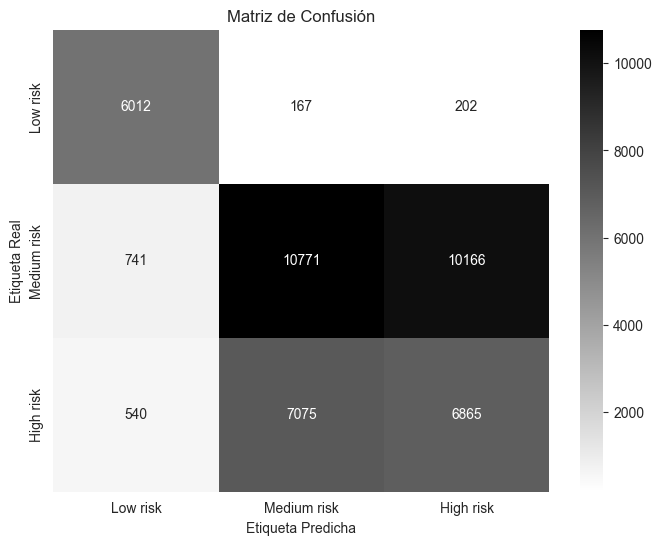
print(classification_report(y_test,y_pred_knn, labels=['Low','Medium','High']))
precision recall f1-score support
Low 0.60 0.50 0.54 21678
Medium 0.40 0.47 0.43 14480
High 0.82 0.94 0.88 6381
accuracy 0.56 42539
macro avg 0.61 0.64 0.62 42539
weighted avg 0.56 0.56 0.56 42539
roc_results = plot_multiclass_roc(Knn, X_test_final, y_test, classes)
print(roc_results)
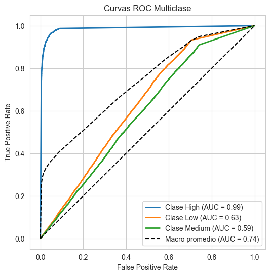
{0: np.float64(0.9864605575527887), 1: np.float64(0.6289900585230674), 2: np.float64(0.5914397597288585), 'macro': np.float64(0.7356475132936463)}
Gridsearch KNN#
param_knn={
'n_neighbors': range(1,21)
}
grid_knn=GridSearchCV(Knn,param_grid=param_knn,cv=5,scoring='f1_macro')
grid_knn.fit(X_train_final_bal,y_train_bal)
GridSearchCV(cv=5, estimator=KNeighborsClassifier(weights='distance'),
param_grid={'n_neighbors': range(1, 21)}, scoring='f1_macro')In a Jupyter environment, please rerun this cell to show the HTML representation or trust the notebook. On GitHub, the HTML representation is unable to render, please try loading this page with nbviewer.org.
GridSearchCV(cv=5, estimator=KNeighborsClassifier(weights='distance'),
param_grid={'n_neighbors': range(1, 21)}, scoring='f1_macro')KNeighborsClassifier(n_neighbors=1, weights='distance')
KNeighborsClassifier(n_neighbors=1, weights='distance')
print("KNN GridSearch - Mejor f1:", grid_knn.best_score_)
print("KNN GridSearch - Params:", grid_knn.best_params_)
KNN GridSearch - Mejor f1: 0.7727458807780889
KNN GridSearch - Params: {'n_neighbors': 1}
grid_knn_roc=GridSearchCV(Knn,param_grid=param_knn,cv=5,scoring='roc_auc_ovr')
grid_knn_roc.fit(X_train_final_bal,y_train_bal)
GridSearchCV(cv=5, estimator=KNeighborsClassifier(weights='distance'),
param_grid={'n_neighbors': range(1, 21)}, scoring='roc_auc_ovr')In a Jupyter environment, please rerun this cell to show the HTML representation or trust the notebook. On GitHub, the HTML representation is unable to render, please try loading this page with nbviewer.org.
GridSearchCV(cv=5, estimator=KNeighborsClassifier(weights='distance'),
param_grid={'n_neighbors': range(1, 21)}, scoring='roc_auc_ovr')KNeighborsClassifier(n_neighbors=6, weights='distance')
KNeighborsClassifier(n_neighbors=6, weights='distance')
print("KNN GridSearch - Mejor roc:", grid_knn_roc.best_score_)
print("KNN GridSearch - Params:", grid_knn_roc.best_params_)
KNN GridSearch - Mejor roc: 0.8976567907440227
KNN GridSearch - Params: {'n_neighbors': 6}
Evaluacion Metricas Modelo KNN#
best_knn=KNeighborsClassifier(n_neighbors=6,weights='distance')
best_knn.fit(X_train_final_bal,y_train_bal)
KNeighborsClassifier(n_neighbors=6, weights='distance')In a Jupyter environment, please rerun this cell to show the HTML representation or trust the notebook.
On GitHub, the HTML representation is unable to render, please try loading this page with nbviewer.org.
KNeighborsClassifier(n_neighbors=6, weights='distance')
y_knn=best_knn.predict(X_test_final)
conf_matrix_knn_best = confusion_matrix(y_test, y_knn).astype(int)
plt.figure(figsize=(8, 6))
sns.heatmap(conf_matrix_knn_best, annot=True, fmt="d", cmap="gray_r",
xticklabels=['Low risk', 'Medium risk', 'High risk'],
yticklabels=['Low risk', 'Medium risk', 'High risk'])
plt.xlabel("Etiqueta Predicha")
plt.ylabel("Etiqueta Real")
plt.title("Matriz de Confusión")
plt.show()
Low risk (real):
Correctamente predichos: 6047
Clasificados como Medium: 151
Clasificados como High: 183
Medium risk (real):
Clasificados como Low: 823
Correctamente predichos: 10954
Clasificados como High: 9901
High risk (real):
Clasificados como Low: 564
Clasificados como Medium: 7268
Correctamente predichos: 6648
print(classification_report(y_test,y_knn, labels=['Low','Medium','High']))
precision recall f1-score support
Low 0.60 0.51 0.55 21678
Medium 0.40 0.46 0.43 14480
High 0.81 0.95 0.88 6381
accuracy 0.56 42539
macro avg 0.60 0.64 0.62 42539
weighted avg 0.56 0.56 0.56 42539
High risk
Precision = 0.81 de todas las veces que predijo “High”, 60% fueron correctas.
Recall = 0.95 casi todos los verdaderos “High” fueron detectados.
F1 = 0.88 balance aceptable, el mejor de las tres clases.
El modelo sobre-detecta “High” (muchos falsos positivos), pero no se le escapan casi casos reales.
Low risk
Precision = 0.60
Recall = 0.51
F1 = 0.55
Desempeño moderado y balanceado. El modelo se defiende relativamente bien con esta clase.
Medium risk
Precision = 0.40
Recall = 0.46
F1 = 0.43
Estos son los resultados menos problematicos de entre todos los modelos puesto que medium está bastante mas balanceado sin perder eficacia en high
roc_results = plot_multiclass_roc(best_knn, X_test_final, y_test, classes)
print(roc_results)
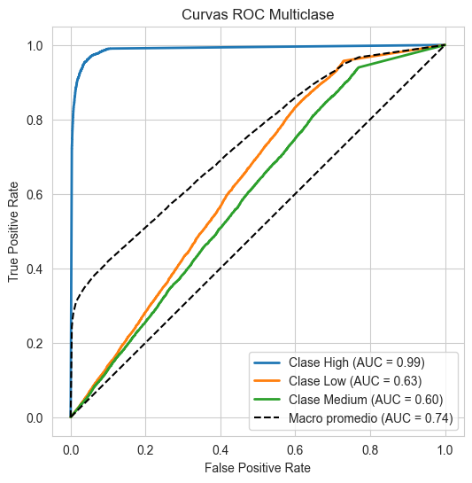
{0: np.float64(0.9884761545470838), 1: np.float64(0.633290489814359), 2: np.float64(0.5955003124336072), 'macro': np.float64(0.7391072280046468)}
Clase High (AUC = 0.99):
Excelente desempeño: el modelo discrimina muy bien los casos de alto riesgo frente a los demás.
Esto contrasta con la matriz de confusión, donde vimos que muchos High risk se confundían con Medium risk. El AUC mide la capacidad de discriminación con diferentes umbrales, mientras que la matriz de confusión depende del umbral fijo usado (probablemente 0.5).
Clase Low (AUC = 0.63)
Desempeño bajo-medio. El modelo tiene dificultades para distinguir correctamente los casos de bajo riesgo.
En la matriz, vimos que “Low risk” se predice mejor que “High risk”, pero el AUC refleja que no es tan fácil separarlo de las otras clases en el espacio de probabilidades.
Clase Medium (AUC = 0.60)
Es la clase más problemática. Aunque en la matriz de confusión parecía la más fuerte (15,735 aciertos), el AUC muestra que la discriminación es débil.
Esto pasa porque el modelo tiende a predecir Medium risk “por defecto”, lo cual aumenta los aciertos en esa categoría pero disminuye la calidad de la separación probabilística.
Macro promedio (AUC = 0.74)
Balance general aceptable, pero claramente con clases desbalanceadas en rendimiento.
El promedio está inflado por el buen AUC de la clase High.
Modelo Ridge#
Modelo base#
classes = np.unique(y_train)
log_ridge=LogisticRegression(max_iter=1000,random_state=0,multi_class="ovr",class_weight='balanced',penalty='l2')
log_ridge.fit(X_train_final,y_train)
LogisticRegression(class_weight='balanced', max_iter=1000, multi_class='ovr',
random_state=0)In a Jupyter environment, please rerun this cell to show the HTML representation or trust the notebook. On GitHub, the HTML representation is unable to render, please try loading this page with nbviewer.org.
LogisticRegression(class_weight='balanced', max_iter=1000, multi_class='ovr',
random_state=0)y_pred_ridge=log_ridge.predict(X_test_final)
print(accuracy_score(y_test, y_pred_ridge))
0.5637415077928489
precision_score(y_test, y_pred_ridge,average='macro')
0.5241481685624211
recall_score(y_test, y_pred_ridge,average='macro')
0.6073104618721518
f1_score(y_test,y_pred_ridge,average='macro')
0.5340702531873526
conf_matrix_log_ridge = confusion_matrix(y_test, y_pred_ridge).astype(int)
plt.figure(figsize=(8, 6))
sns.heatmap(conf_matrix_log_ridge, annot=True, fmt="d", cmap="gray_r",
xticklabels=['Low risk', 'Medium risk', 'High risk'],
yticklabels=['Low risk', 'Medium risk', 'High risk'])
plt.xlabel("Etiqueta Predicha")
plt.ylabel("Etiqueta Real")
plt.title("Matriz de Confusión")
plt.show()
print(classification_report(y_test,y_pred_ridge, labels=['Low','Medium','High']))
precision recall f1-score support
Low 0.59 0.73 0.65 21678
Medium 0.39 0.15 0.22 14480
High 0.60 0.94 0.73 6381
accuracy 0.56 42539
macro avg 0.52 0.61 0.53 42539
weighted avg 0.52 0.56 0.52 42539
roc_results = plot_multiclass_roc(log_ridge, X_test_final, y_test, classes)
print(roc_results)
{0: np.float64(0.9618240779408842), 1: np.float64(0.6376680309926773), 2: np.float64(0.6069811510040308), 'macro': np.float64(0.7355102308686545)}
Gridsearch Modelo Ridge#
param_grid_log = {
"C": [0.01,0.1, 1, 10,100],
"solver": ["lbfgs","saga"]
}
grid_log_ridge=GridSearchCV(log_ridge,param_grid=param_grid_log,cv=5,scoring='f1_macro')
grid_log_ridge.fit(X_train_final,y_train)
GridSearchCV(cv=5,
estimator=LogisticRegression(class_weight='balanced',
max_iter=1000, multi_class='ovr',
random_state=0),
param_grid={'C': [0.01, 0.1, 1, 10, 100],
'solver': ['lbfgs', 'saga']},
scoring='f1_macro')In a Jupyter environment, please rerun this cell to show the HTML representation or trust the notebook. On GitHub, the HTML representation is unable to render, please try loading this page with nbviewer.org.
GridSearchCV(cv=5,
estimator=LogisticRegression(class_weight='balanced',
max_iter=1000, multi_class='ovr',
random_state=0),
param_grid={'C': [0.01, 0.1, 1, 10, 100],
'solver': ['lbfgs', 'saga']},
scoring='f1_macro')LogisticRegression(C=1, class_weight='balanced', max_iter=1000,
multi_class='ovr', random_state=0)LogisticRegression(C=1, class_weight='balanced', max_iter=1000,
multi_class='ovr', random_state=0)print("Ridge GridSearch - Mejor f1:", grid_log_ridge.best_score_)
print("Ridge GridSearch - Params:", grid_log_ridge.best_params_)
Ridge GridSearch - Mejor f1: 0.5382331031929547
Ridge GridSearch - Params: {'C': 1, 'solver': 'lbfgs'}
grid_log_ridge_roc=GridSearchCV(log_ridge,param_grid=param_grid_log,cv=5,scoring='roc_auc_ovr')
grid_log_ridge_roc.fit(X_train_final,y_train)
GridSearchCV(cv=5,
estimator=LogisticRegression(class_weight='balanced',
max_iter=1000, multi_class='ovr',
random_state=0),
param_grid={'C': [0.01, 0.1, 1, 10, 100],
'solver': ['lbfgs', 'saga']},
scoring='roc_auc_ovr')In a Jupyter environment, please rerun this cell to show the HTML representation or trust the notebook. On GitHub, the HTML representation is unable to render, please try loading this page with nbviewer.org.
GridSearchCV(cv=5,
estimator=LogisticRegression(class_weight='balanced',
max_iter=1000, multi_class='ovr',
random_state=0),
param_grid={'C': [0.01, 0.1, 1, 10, 100],
'solver': ['lbfgs', 'saga']},
scoring='roc_auc_ovr')LogisticRegression(C=100, class_weight='balanced', max_iter=1000,
multi_class='ovr', random_state=0, solver='saga')LogisticRegression(C=100, class_weight='balanced', max_iter=1000,
multi_class='ovr', random_state=0, solver='saga')print("Ridge GridSearch - Mejor roc_auc:", grid_log_ridge_roc.best_score_)
print("Ridge GridSearch - Params:", grid_log_ridge_roc.best_params_)
Ridge GridSearch - Mejor roc_auc: 0.7362363307910595
Ridge GridSearch - Params: {'C': 100, 'solver': 'saga'}
Revision Metricas Ridge#
best_ridge=LogisticRegression(max_iter=1000,multi_class='ovr',solver='saga',C=100,class_weight='balanced',penalty='l2')
best_ridge.fit(X_train_final,y_train)
LogisticRegression(C=100, class_weight='balanced', max_iter=1000,
multi_class='ovr', solver='saga')In a Jupyter environment, please rerun this cell to show the HTML representation or trust the notebook. On GitHub, the HTML representation is unable to render, please try loading this page with nbviewer.org.
LogisticRegression(C=100, class_weight='balanced', max_iter=1000,
multi_class='ovr', solver='saga')y_ridge=best_ridge.predict(X_test_final)
conf_matrix_log_ridge_best = confusion_matrix(y_test, y_ridge).astype(int)
plt.figure(figsize=(8, 6))
sns.heatmap(conf_matrix_log_ridge_best, annot=True, fmt="d", cmap="gray_r",
xticklabels=['Low risk', 'Medium risk', 'High risk'],
yticklabels=['Low risk', 'Medium risk', 'High risk'])
plt.xlabel("Etiqueta Predicha")
plt.ylabel("Etiqueta Real")
plt.title("Matriz de Confusión")
plt.show()
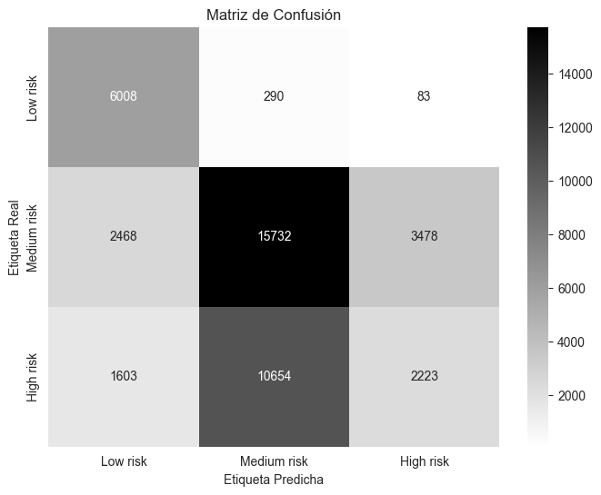
Low risk (real):
Correctamente predichos: 6008
Clasificados como Medium: 290
Clasificados como High: 83
Medium risk (real):
Clasificados como Low: 2468
Correctamente predichos: 15735
Clasificados como High: 3475
High risk (real):
Clasificados como Low: 1604
Clasificados como Medium: 10653
Correctamente predichos: 2223
print(classification_report(y_test,y_ridge, labels=['Low','Medium','High']))
precision recall f1-score support
Low 0.59 0.73 0.65 21678
Medium 0.38 0.15 0.22 14480
High 0.60 0.94 0.73 6381
accuracy 0.56 42539
macro avg 0.52 0.61 0.53 42539
weighted avg 0.52 0.56 0.52 42539
High risk
Precision = 0.60 de todas las veces que predijo “High”, 60% fueron correctas.
Recall = 0.94 casi todos los verdaderos “High” fueron detectados.
F1 = 0.73 balance aceptable, el mejor de las tres clases.
El modelo sobre-detecta “High” (muchos falsos positivos), pero no se le escapan casi casos reales.
Low risk
Precision = 0.59
Recall = 0.73
F1 = 0.65.
Desempeño moderado y balanceado. El modelo se defiende relativamente bien con esta clase.
Medium risk
Precision = 0.38
Recall = 0.15
F1 = 0.22.
Aquí está el problema mayor: el modelo casi nunca identifica bien los casos Medium (recall bajísimo). Esto explica por qué en la matriz de confusión tantos Medium fueron confundidos con High o Low.
roc_results = plot_multiclass_roc(best_ridge, X_test_final, y_test, classes)
print(roc_results)
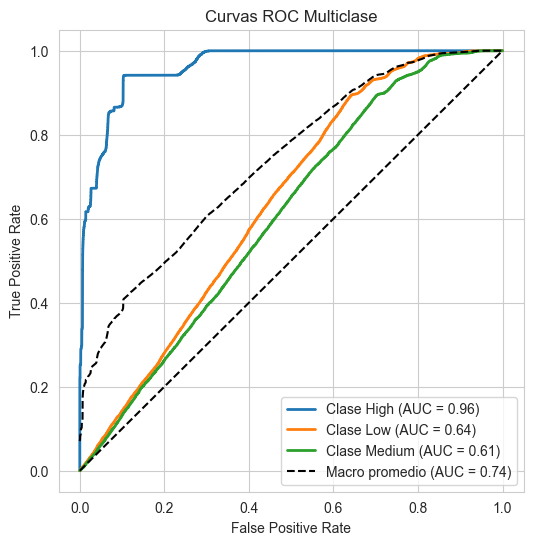
{0: np.float64(0.9619136480864481), 1: np.float64(0.6376861303997867), 2: np.float64(0.606956075585797), 'macro': np.float64(0.7355373316655698)}
Clase High (AUC = 0.96):
Excelente desempeño: el modelo discrimina muy bien los casos de alto riesgo frente a los demás.
Esto contrasta con la matriz de confusión, donde vimos que muchos High risk se confundían con Medium risk. El AUC mide la capacidad de discriminación con diferentes umbrales, mientras que la matriz de confusión depende del umbral fijo usado (probablemente 0.5).
Clase Low (AUC = 0.64)
Desempeño bajo-medio. El modelo tiene dificultades para distinguir correctamente los casos de bajo riesgo.
En la matriz, vimos que “Low risk” se predice mejor que “High risk”, pero el AUC refleja que no es tan fácil separarlo de las otras clases en el espacio de probabilidades.
Clase Medium (AUC = 0.61)
Es la clase más problemática. Aunque en la matriz de confusión parecía la más fuerte (15,735 aciertos), el AUC muestra que la discriminación es débil.
Esto pasa porque el modelo tiende a predecir Medium risk “por defecto”, lo cual aumenta los aciertos en esa categoría pero disminuye la calidad de la separación probabilística.
Macro promedio (AUC = 0.74)
Balance general aceptable, pero claramente con clases desbalanceadas en rendimiento.
El promedio está inflado por el buen AUC de la clase High.
Modelo Lasso#
Modelo Base#
classes = np.unique(y_train)
log_lasso=LogisticRegression(max_iter=1000,random_state=0,multi_class="ovr",class_weight='balanced',penalty='l1',solver='saga')
log_lasso.fit(X_train_final,y_train)
LogisticRegression(class_weight='balanced', max_iter=1000, multi_class='ovr',
penalty='l1', random_state=0, solver='saga')In a Jupyter environment, please rerun this cell to show the HTML representation or trust the notebook. On GitHub, the HTML representation is unable to render, please try loading this page with nbviewer.org.
LogisticRegression(class_weight='balanced', max_iter=1000, multi_class='ovr',
penalty='l1', random_state=0, solver='saga')y_pred_lasso=log_lasso.predict(X_test_final)
print(accuracy_score(y_test, y_pred_lasso))
0.5636474764333905
precision_score(y_test, y_pred_lasso,average='macro')
0.5234975724590708
recall_score(y_test,y_pred_lasso,average='macro')
0.6070043576448177
f1_score(y_test,y_pred_lasso,average='macro')
0.5331539345371298
conf_matrix_log_lasso = confusion_matrix(y_test, y_pred_lasso).astype(int)
plt.figure(figsize=(8, 6))
sns.heatmap(conf_matrix_log_lasso, annot=True, fmt="d", cmap="gray_r",
xticklabels=['Low risk', 'Medium risk', 'High risk'],
yticklabels=['Low risk', 'Medium risk', 'High risk'])
plt.xlabel("Etiqueta Predicha")
plt.ylabel("Etiqueta Real")
plt.title("Matriz de Confusión")
plt.show()
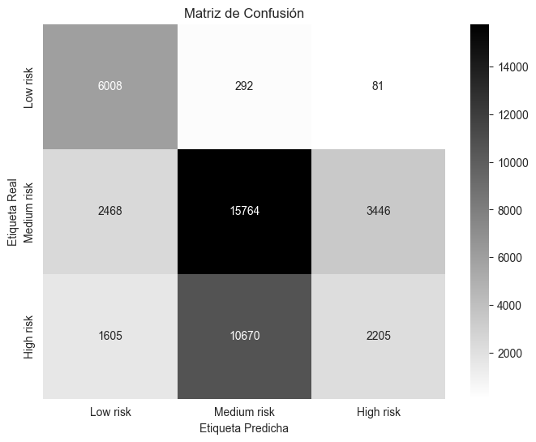
print(classification_report(y_test,y_pred_lasso, labels=['Low','Medium','High']))
precision recall f1-score support
Low 0.59 0.73 0.65 21678
Medium 0.38 0.15 0.22 14480
High 0.60 0.94 0.73 6381
accuracy 0.56 42539
macro avg 0.52 0.61 0.53 42539
weighted avg 0.52 0.56 0.52 42539
roc_results = plot_multiclass_roc(log_lasso, X_test_final, y_test, classes)
print(roc_results)
{0: np.float64(0.9619099900392762), 1: np.float64(0.6376842309018385), 2: np.float64(0.6069667328846734), 'macro': np.float64(0.7355389791586877)}
Gridsearch Lasso#
param_grid_lasso = {
"C": [0.01,0.1, 1, 10,100],
}
grid_log_lasso=GridSearchCV(log_lasso,param_grid=param_grid_lasso,cv=5,scoring='f1_macro')
grid_log_lasso.fit(X_train_final,y_train)
GridSearchCV(cv=5,
estimator=LogisticRegression(class_weight='balanced',
max_iter=1000, multi_class='ovr',
penalty='l1', random_state=0,
solver='saga'),
param_grid={'C': [0.01, 0.1, 1, 10, 100]}, scoring='f1_macro')In a Jupyter environment, please rerun this cell to show the HTML representation or trust the notebook. On GitHub, the HTML representation is unable to render, please try loading this page with nbviewer.org.
GridSearchCV(cv=5,
estimator=LogisticRegression(class_weight='balanced',
max_iter=1000, multi_class='ovr',
penalty='l1', random_state=0,
solver='saga'),
param_grid={'C': [0.01, 0.1, 1, 10, 100]}, scoring='f1_macro')LogisticRegression(C=100, class_weight='balanced', max_iter=1000,
multi_class='ovr', penalty='l1', random_state=0,
solver='saga')LogisticRegression(C=100, class_weight='balanced', max_iter=1000,
multi_class='ovr', penalty='l1', random_state=0,
solver='saga')print("Lasso GridSearch - Mejor f1:", grid_log_lasso.best_score_)
print("Lasso GridSearch - Params:", grid_log_lasso.best_params_)
Lasso GridSearch - Mejor f1: 0.538100553978753
Lasso GridSearch - Params: {'C': 100}
grid_log_lasso_roc=GridSearchCV(log_lasso,param_grid=param_grid_lasso,cv=5,scoring='roc_auc_ovr')
grid_log_lasso_roc.fit(X_train_final,y_train)
GridSearchCV(cv=5,
estimator=LogisticRegression(class_weight='balanced',
max_iter=1000, multi_class='ovr',
penalty='l1', random_state=0,
solver='saga'),
param_grid={'C': [0.01, 0.1, 1, 10, 100]}, scoring='roc_auc_ovr')In a Jupyter environment, please rerun this cell to show the HTML representation or trust the notebook. On GitHub, the HTML representation is unable to render, please try loading this page with nbviewer.org.
GridSearchCV(cv=5,
estimator=LogisticRegression(class_weight='balanced',
max_iter=1000, multi_class='ovr',
penalty='l1', random_state=0,
solver='saga'),
param_grid={'C': [0.01, 0.1, 1, 10, 100]}, scoring='roc_auc_ovr')LogisticRegression(C=100, class_weight='balanced', max_iter=1000,
multi_class='ovr', penalty='l1', random_state=0,
solver='saga')LogisticRegression(C=100, class_weight='balanced', max_iter=1000,
multi_class='ovr', penalty='l1', random_state=0,
solver='saga')print("Lasso GridSearch - Mejor roc_auc:", grid_log_lasso_roc.best_score_)
print("Lasso GridSearch - Params:", grid_log_lasso_roc.best_params_)
Lasso GridSearch - Mejor roc_auc: 0.7362362728905827
Lasso GridSearch - Params: {'C': 100}
Evaluacion Metricas Lasso#
best_lasso=LogisticRegression(max_iter=1000,random_state=0,solver='saga',multi_class='ovr',penalty='l1',class_weight='balanced',C=100)
best_lasso.fit(X_train_final,y_train)
LogisticRegression(C=100, class_weight='balanced', max_iter=1000,
multi_class='ovr', penalty='l1', random_state=0,
solver='saga')In a Jupyter environment, please rerun this cell to show the HTML representation or trust the notebook. On GitHub, the HTML representation is unable to render, please try loading this page with nbviewer.org.
LogisticRegression(C=100, class_weight='balanced', max_iter=1000,
multi_class='ovr', penalty='l1', random_state=0,
solver='saga')y_lasso=best_lasso.predict(X_test_final)
conf_matrix_log_bestlasso = confusion_matrix(y_test, y_lasso).astype(int)
plt.figure(figsize=(8, 6))
sns.heatmap(conf_matrix_log_bestlasso, annot=True, fmt="d", cmap="gray_r",
xticklabels=['Low risk', 'Medium risk', 'High risk'],
yticklabels=['Low risk', 'Medium risk', 'High risk'])
plt.xlabel("Etiqueta Predicha")
plt.ylabel("Etiqueta Real")
plt.title("Matriz de Confusión")
plt.show()
Low risk (real):
Correctamente predichos: 6008
Clasificados como Medium: 290
Clasificados como High: 83
Medium risk (real):
Clasificados como Low: 2468
Correctamente predichos: 15735
Clasificados como High: 3475
High risk (real):
Clasificados como Low: 1604
Clasificados como Medium: 10654
Correctamente predichos: 2222
conclusiones:
Medium risk domina: El modelo tiene un muy buen desempeño clasificando “Medium risk” (15,735 aciertos).
Confusión con Medium risk: Muchos casos de High risk (10,654) y Low risk (290) están siendo clasificados como Medium. Esto sugiere que el modelo tiende a sobrepredecir la clase Medium.
High risk subrepresentado: Aunque hay 14,480 casos reales de High risk (1604 + 10654 + 2222), solo 2222 fueron identificados correctamente, lo cual indica un recall bajo para esta clase.
Low risk es el más balanceado: Tiene buena identificación (6008 correctos) con relativamente pocos errores.
print(classification_report(y_test,y_lasso, labels=['Low','Medium','High']))
precision recall f1-score support
Low 0.59 0.73 0.65 21678
Medium 0.38 0.15 0.22 14480
High 0.60 0.94 0.73 6381
accuracy 0.56 42539
macro avg 0.52 0.61 0.53 42539
weighted avg 0.52 0.56 0.52 42539
High risk
Precision = 0.60 de todas las veces que predijo “High”, 60% fueron correctas.
Recall = 0.94 casi todos los verdaderos “High” fueron detectados.
F1 = 0.73 balance aceptable, el mejor de las tres clases.
El modelo sobre-detecta “High” (muchos falsos positivos), pero no se le escapan casi casos reales.
Low risk
Precision = 0.59
Recall = 0.73
F1 = 0.65.
Desempeño moderado y balanceado. El modelo se defiende relativamente bien con esta clase.
Medium risk
Precision = 0.38
Recall = 0.15
F1 = 0.22.
Aquí está el problema mayor: el modelo casi nunca identifica bien los casos Medium (recall bajísimo). Esto explica por qué en la matriz de confusión tantos Medium fueron confundidos con High o Low.
roc_results = plot_multiclass_roc(best_lasso, X_test_final, y_test, classes)
print(roc_results)
{0: np.float64(0.9619133403597311), 1: np.float64(0.6376851485871102), 2: np.float64(0.6069551058454373), 'macro': np.float64(0.7355362720877159)}
Clase High (AUC = 0.96):
Excelente desempeño: el modelo discrimina muy bien los casos de alto riesgo frente a los demás.
Esto contrasta con la matriz de confusión, donde vimos que muchos High risk se confundían con Medium risk. El AUC mide la capacidad de discriminación con diferentes umbrales, mientras que la matriz de confusión depende del umbral fijo usado (probablemente 0.5).
Clase Low (AUC = 0.64)
Desempeño bajo-medio. El modelo tiene dificultades para distinguir correctamente los casos de bajo riesgo.
En la matriz, vimos que “Low risk” se predice mejor que “High risk”, pero el AUC refleja que no es tan fácil separarlo de las otras clases en el espacio de probabilidades.
Clase Medium (AUC = 0.61)
Es la clase más problemática. Aunque en la matriz de confusión parecía la más fuerte (15,735 aciertos), el AUC muestra que la discriminación es débil.
Esto pasa porque el modelo tiende a predecir Medium risk “por defecto”, lo cual aumenta los aciertos en esa categoría pero disminuye la calidad de la separación probabilística.
Macro promedio (AUC = 0.74)
Balance general aceptable, pero claramente con clases desbalanceadas en rendimiento.
El promedio está inflado por el buen AUC de la clase High.
Conclusiones generales del entregable 2#
Se implementaron y compararon diferentes modelos de clasificación multiclase (Ridge, Lasso, Regresión Logística y KNN) con el fin de predecir el riesgo de cáncer de tiroides en tres niveles: Low, Medium y High. El objetivo principal fue dar prioridad a la detección de los casos High y Medium, ya que estos representan un mayor riesgo y normalmente requieren estudios médicos adicionales.
El modelo que obtuvo el mejor desempeño fue KNN, alcanzando un AUC de 0.99 para la clase High, lo que indica una excelente capacidad de discriminación en los casos más críticos. Además, mostró un recall de 0.95 y un F1-score de 0.88 en la clase High, reduciendo así el riesgo de falsos negativos en esta categoría. Aunque el rendimiento en la clase Medium fue más bajo (AUC = 0.60, F1-score = 0.43), el modelo mantuvo un equilibrio razonable con la clase Low (F1-score = 0.55).
De manera global, el modelo alcanzó una accuracy del 56% y un macro promedio de AUC de 0.74, lo que refleja un comportamiento aceptable en un problema donde las clases no son igualmente críticas.
En conclusión, KNN se posiciona como el modelo más adecuado para este escenario, ya que cumple con el objetivo clínico de priorizar la detección de los casos de mayor riesgo (High), sin sacrificar demasiado el desempeño en las demás clases. Esto lo convierte en una herramienta prometedora para apoyar la toma de decisiones médicas y reducir la probabilidad de pasar por alto pacientes con mayor probabilidad de desarrollar complicaciones.